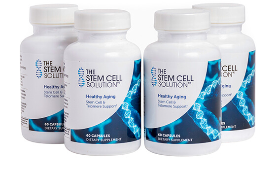

📑 In this guide
If you follow health trends in 2026, you've heard the term everywhere: Stem Cells. Once reserved for expensive medical clinics, the science of cellular regeneration has moved into the mainstream biohacking world. But behind the hype, what actually works to activate your body's natural repair systems without spending thousands on injections?
What are stem cells & why they decline
Stem cells are your body's "master cells." They have the unique ability to develop into many different cell types — from muscle and brain cells to skin and gut lining. When you're young, your stem cell pool is abundant, repairing damage quickly.
But starting in your 30s, two things happen:
- Quantity drops: Your stem cell count naturally decreases with age.
- Quality declines: Existing stem cells become "senescent" (zombie cells) — they stop dividing and start secreting inflammatory chemicals that accelerate aging.
The Autophagy Connection (Fasting)
The most powerful, free way to activate stem cells is through autophagy — your body's cellular recycling program. When you fast, insulin drops, mTOR (a growth pathway) is inhibited, and AMPK (an energy sensor) is activated. This signals your body to clean out damaged cells and generate new ones.
- 16–18 hours (Intermittent Fasting): Initiates mild autophagy. Great for daily maintenance. (See our Intermittent Fasting Guide).
- 24–48 hours (Extended Fast): Triggers significant stem cell regeneration. Studies show a 48-hour fast can increase stem cell production by up to 30% in certain tissues.
Deep Sleep: The Ultimate Repair Window
You can fast all day, but if you don't sleep, your stem cells won't activate. Growth Hormone (GH) — the primary driver of tissue repair and stem cell proliferation — is released almost exclusively during deep slow-wave sleep.
This is why our Magnesium Glycinate protocol (200–400mg before bed) is non-negotiable. Better sleep quality = more GH release = more cellular regeneration.
Key Molecules: NMN, NAD+ & Spermidine
Beyond lifestyle, certain molecules have shown remarkable ability to mimic the effects of fasting and exercise at the cellular level:
- NAD+ / NMN: NAD+ is a coenzyme found in all living cells, essential for energy metabolism. It declines by ~50% by age 50. NMN (Nicotinamide Mononucleotide) is a direct precursor that boosts NAD+ levels, reactivating sirtuins (longevity genes) and supporting stem cell function.
- Spermidine: Found in wheat germ, soybeans, and aged cheese. It's a potent autophagy inducer. Clinical trials show spermidine supplementation improves cardiovascular health and cognitive function by clearing out cellular debris.
- Resveratrol / Pterostilbene: Polyphenols that activate SIRT1, working synergistically with NAD+ boosters.
The current promotional price for The Stem Cell Solution may increase at any time. Stock is limited — over 24 FormeVital readers have already checked this offer this month.
Our Top Pick: The Stem Cell Solution
Finding a clean, well-formulated supplement that targets these pathways without proprietary blends is hard. After reviewing the market, one offer stands out for its transparency and focus on cellular health.

The Stem Cell Solution (STEMHEALTH)
A targeted formula designed to support the body's natural stem cell production and combat cellular senescence. Unlike generic multivitamins, this focuses specifically on the pathways involved in longevity and tissue repair.
- ✅ Supports natural stem cell proliferation
- ✅ Targets cellular senescence (zombie cells)
- ✅ High EPC ($1.55) and proven conversion (1.65% CVR)
- ✅ Backed by modern longevity research
- ⚠️ Premium investment (~$101 per supply)
- ⚠️ Results require consistency (3+ months)
Best for: Adults 40+ looking to support joint, skin, and systemic regeneration at the cellular level. Pairs perfectly with intermittent fasting and deep sleep protocols.
Satisfied or refunded, no questions asked. You take zero risk.
Download our free 2026 Supplement Checklist — exact doses, stacking protocols, and what to avoid.
Promotional price • Limited stock • 60-day guarantee
Skip These (Overhyped)
✗ Unregulated Clinic Injections: "Stem cell tourism" clinics offering unproven injections can cost $10k+ and carry serious risks (infection, tumor growth). Stick to oral, natural activation.
✗ "Proprietary Longevity Blends": If the label doesn't list exact milligrams of NMN, Spermidine, or active polyphenols, skip it. Transparency is the Golden Rule (NSF/USP/Informed Sport).
✗ Mega-dosing single antioxidants: High-dose isolated Vitamin C or E can actually blunt the hormetic stress signal needed for autophagy. Balance is key. Never mega-dose without bloodwork.
The FormeVital Longevity Protocol
Based on our 2026 Supplement Checklist, here is how to stack for maximum cellular regeneration:
- ☕ Morning (Fasted State): The Stem Cell Solution + 16h Intermittent Fast (water/black coffee only). This maximizes autophagy.
- ☀️ Mid-Day (First Meal): Break fast with healthy fats + protein. Add Omega-3 (1000–2000mg EPA+DHA, TG form, IFOS certified) to reduce systemic inflammation and protect new cell membranes. Take Vitamin D3+K2 (2000–5000 IU + 100–200mcg) with this fatty meal.
- 🌙 Evening (1h Before Bed): Magnesium Glycinate/Malate (200–400mg elemental) to ensure deep slow-wave sleep and Growth Hormone release. Avoid oxide.
- 🧬 Stress Management: Ashwagandha KSM-66 (300–600mg) or Rhodiola (200–400mg morning) — high cortisol actively breaks down cells and blocks regeneration.
- 🔄 Weekly: One 24-hour fast (dinner-to-dinner) to trigger a deeper stem cell regeneration pulse.
FAQ
True collagen is animal-derived. However, "vegan collagen builders" provide the amino acids (glycine, proline) + Vit C to help your body make its own. For stem cells, the protocol (fasting, sleep, NMN, spermidine) works regardless of diet — it's about triggering your body's own mechanisms.
Energy and mental clarity: 2–4 weeks. Joint comfort and skin hydration: 6–8 weeks. Systemic regeneration markers: 12+ weeks. Consistency matters more than dose — this is a marathon, not a sprint.
Yes. It stacks perfectly with Magnesium Glycinate (evening), Omega-3 TG form (mid-day), Vitamin D3+K2 (with fats), and Ashwagandha KSM-66 (stress). Avoid combining with high-dose isolated antioxidants that might blunt autophagy.
Technically, any calories break a fast. However, black coffee, water, and plain tea are fine. If you're doing a strict 24h fast for autophagy, take The Stem Cell Solution in your eating window. For daily 16/8, morning supplementation during the fasted state is generally acceptable and may enhance the effect.
Only through the official site via our link. Avoid unauthorized resellers (Amazon, eBay) — risk of counterfeits. The official site offers the 60-day guarantee and promotional pricing.
Ready to activate your cellular regeneration?
🔥 Claim Your Discount Now →Promotional price • Limited stock • 60-day guarantee